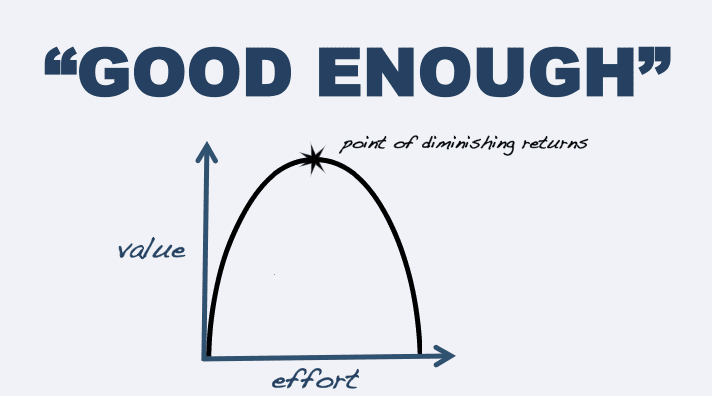

Luke Stranahan is an engineer by trade and an armed patriot by inclination. He writes for Return of Kings as a leisure pursuit and an attempt to do his part to help reverse the slide into moral decrepitude of modern society. Follow him on Twitter.


One of the foundations of living a good life in today’s times is having a good place to call home. Whether you want a solid, comfortable place with which to pursue your hobbies, recover from the day’s tribulations, and just to be, or whether you want a bachelor pad for your romantic pursuits, or both; a good home is essential to the modern man.
I purchased a home and I decided to be my own general contractor for the renovations. My home was an as-originally-furnished home of the 1970s, and I brought its multi-color painted, green shag carpeted datedness up to a sharply trimmed, hardwood-floored modernity while being of a somewhat timeless style. A general contractor is a person hired by the architect or engineer to run the job site, source the labor, follow the schedule, get the materials, and execute the vision of the plan. Here are ten things I learned as my own general contractor.

You will run into both good and bad contractors out there. A good contractor does good work, at good value, follows the schedule, and is honest and doesn’t lie to you. A bad contractor will do any or all of the above. I fired a contractor who had good value, but did poor work, could not follow the schedule, and lied to me. I paid more for a later contractor who did excellent work, hit the schedule on time, and was a perfectionist. Give a bad contractor a second chance, mainly to see how he corrects it; and, if he fails to shape up, cut him loose.
A good contractor has the correct amount of paperwork, but no more. Some firms I turned down did things by hand and had no contractor’s license, and that is too little, whereas a firm that gives you fifteen pages of legalese allowing them to take out an uncontested mechanic’s lien on your home if you do not pay is too much.
A lot has to do with the presentation of the representative. Tradesmen are naturally rough people who work with their hands, but a man that does not have a good handshake, good eye contact, and is evasive on important details is shady.
The best indicator of a good contractor is that they have a busy schedule, and I mean they are booked often a month or so in advance. The guy I fired kept trying to work me in on the weekends and at night, which, while it SEEMS like he’s busy, he’s actually operating in the red and trying to use your funds to cover his other jobs.
A good contractor will negotiate terms up front and not change them, and he will, when awarded the job, put you in his schedule at an agreed-upon time. My best contractor was so busy that I had to do other things first before I could get his firm to bid my work, and they did what good contractors do when they are too busy; they turned down my work until later.

General contractors in an area have a reputation amongst their customers and the contractors they sub-contract to, and the only difference between those that do it for a living and you is that you have no reputation.
A busy contractor will work with a GC who will give them work in the future over one who will not. I was an unknown, so the busy guys during the busy season (fall and pre-holidays) would pass on me and work with ones they knew.
However, word got around to the others that I gave jobs of good scope, and paid on time. I hired a sub contractor for a set of jobs, and, once they found out who I used as my electrician (it was who they subbed their own electrical jobs to), they called and the electricians vouched that I was picky as all hell, but paid on time, and let them run their own schedule and have the run of the house. At that point, I was in.
Reputation works the other way too. A good roofer who I only turned down because he was too busy and wouldn’t meet my timetable has a brother who runs the electrical shop mentioned above. Although you should ALWAYS get multiple competing quotes (bid to three, two will generally respond, and pick the better one), the deciding factor was that his brother, the roofer, ran a good shop, and it stood to reason he would, too.
My plumbers knew my AC guys and my chimney guy. My flooring guys knew my kitchen cabinets guys. Everyone works with and around everyone else, and I saved all my paperwork and contact info for all my vendors so that, on any future projects, I know who to call for what, and, even if I don’t know, I know who to ask for recommendations.

Home renovation is expensive, and it’s mainly for the nasty reason that, once you commit to action, you can get hit with extra costs. You can mitigate this with good bid scopes that you give to your contractors so all parties know what is what, but you will find that the home will need things you didn’t think about, or that the hourly rate of the laborers is higher than you budgeted, or materials will simply cost more.
Part of the balancing act that is required is you will learn what to spend money on now, and what to spend money on later. Right now, I live in the place (finally), but I still have construction paper down on my floors as I have not yet bought furniture pads or rugs for the high traffic areas. My bathrooms have plumbing in, but no mirrors, cabinets, towel racks, or toilet paper holders. Entire rooms are without furniture. All of these can, and should, be taken care of later, but things like flooring and painting needed to happen earlier.
You may not need something this complicated, but a Gantt chart shows dependency of one job on others.
Contractors have their own schedules, and there is also the time outside the work time where they have to arrange a site visit, you have to juggle quotes, they have to then write you in, then they do the work, then there’s follow-ups and punch-lists, and then, finally, that job is done and you pay them.
You can’t do some other jobs before you finish the first one. This is where having a master schedule and knowing who is doing what and affecting whom matters. My floor guys had to have the run of the place when they were finishing the floors, but they did not when they were laying sub-floor, and I was able to have plumbers in that day as well. Contrariwise, I could not start the kitchen install until after the floors were done.
I had my own thoughts about what to do with the place. Sometimes I was wrong; it was stupid to try to reuse the baseboard that was over the carpet and put it over the hardwood (even though it was the same color) and I listened to my contractor and used new. Sometimes I was right, my backsplash behind my sink was supposed to match the counter-tops’ colors, and the ratio of white I wanted was correct, but I was persuaded to add more by my contractor.
Know what is important in your vision and be able to explain your intent, but the contractor might have a better way of how to do it in mind than if you had told them the how, instead of the what. I have a rather creative way of running the drains on my basement fixtures; they did what I wanted, but did it in a better way than I would have suggested, and they got it almost completely right to my intent in the process.
The one thing a professional general contractor does that you, as a private operator, will not is do all the basic stuff themselves. A GC will hire an electrician to wire fan boxes for mounting fans, but he will install the boxes and hang the fans himself. My electricians did install and hang them for me anyway.
This was for two reasons, and this is how you can mitigate having little shit jobs that no one will want to do as a single job. The first is to provide all the materials yourself, which also allows you to pick out what you want. I had a pile of fixtures, fans, and bulbs laid out for them with a plan of what went where, and this helped them just throw them up after the technical wiring part was done.
The second reason is to provide a good scope of work. Will a plumber come install a single faucet? Maybe. Will he come install five and a garbage disposal? Certainly, that’s a good day’s work, so, if you have little jobs, have a LOT of little jobs, and you’ll get more interest.

This house is old, but renovated. Some things simply cannot be fixed without massive upheaval; I cannot have perfectly flat ceilings because the drywall is 40 years old and it had popcorn texture on it. Some things I did not address; I have new baseboard and new window trim, but the door trim is original and has the nicks and stains of time.
Some things were done, but were not perfect. The drywall where my kitchen cabinets’ bulkhead used to hang from the ceiling has one spot where, even after two reworks, still has a hairline paint crack. Some of the window film has pull away lines, and there’s a couple things trapped under the film in places. One of the toilets will top itself off for a few seconds signifying a small seal issue. You cannot have perfection, but you can go for reasonable excellence.
The Man sucks. Someone called Code Enforcement on me, and I had to go get a permit of a cost of X% of the renovation’s cost, mainly so they can jack my taxes up.
I got the permit, and I expect my taxes to go up. The inspector was a real schmuck, as most appointed officials are, but the joke’s on him, as I only got the permit on what I had left to do and I omitted some things that would still happen, but weren’t too noticeable.
With code enforcement and county ordinances, the idea is reasonable cooperation and being able to explain things away with saying you were mistaken, instead of flouting the law. I went and got the permit when I was busted for it, but they only know a third of the story. Had I gotten a permit earlier, perhaps whatever nosy neighbor that ratted me out might not have called at all. Another tactic, which I will do on a future project I have planned, is to get the permit months ahead of time, then hit it hard over a few days and be done before anyone notices.
If you have the time, the patience, and the skill to know exactly what you want, who to get for it, and how to juggle a massive schedule, running your own home renovation is a lot of fun and very educational. If you want it done faster and just want to deal with one person for everything, then hiring a professional general contractor might be the way to go instead.
Read More: 14 Essential Subjects That We Will Teach Children At The ROK International School